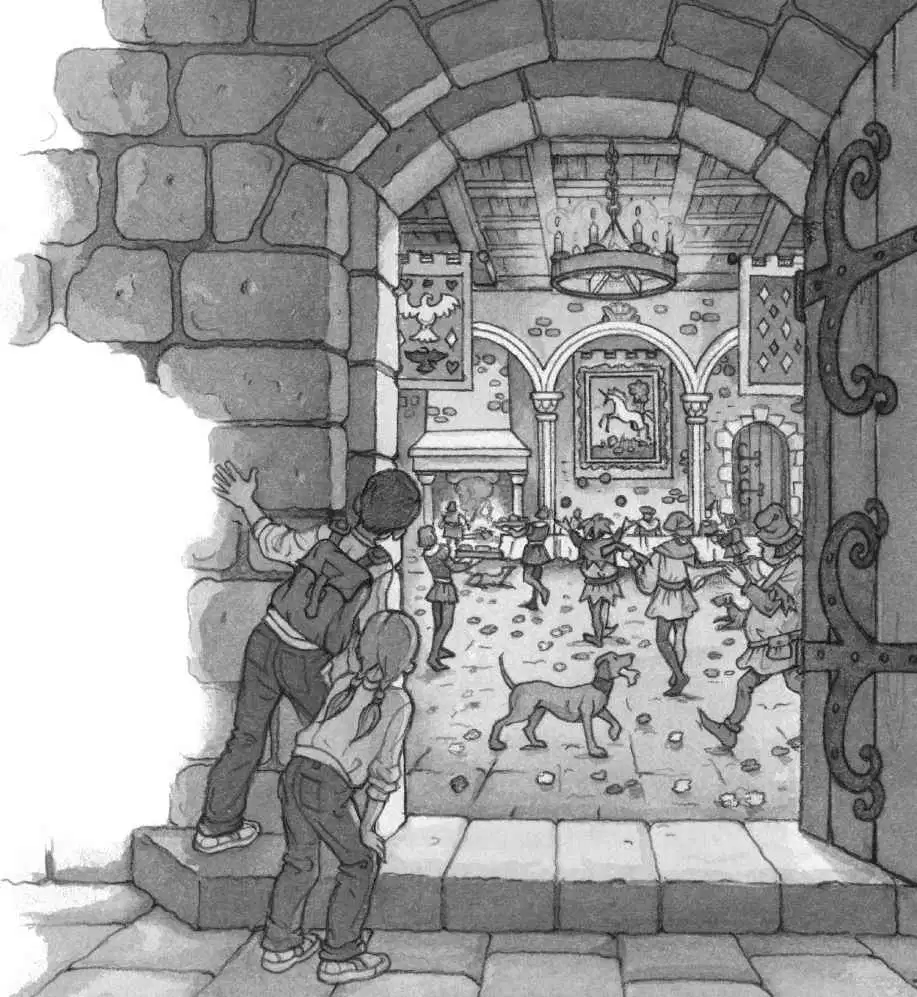
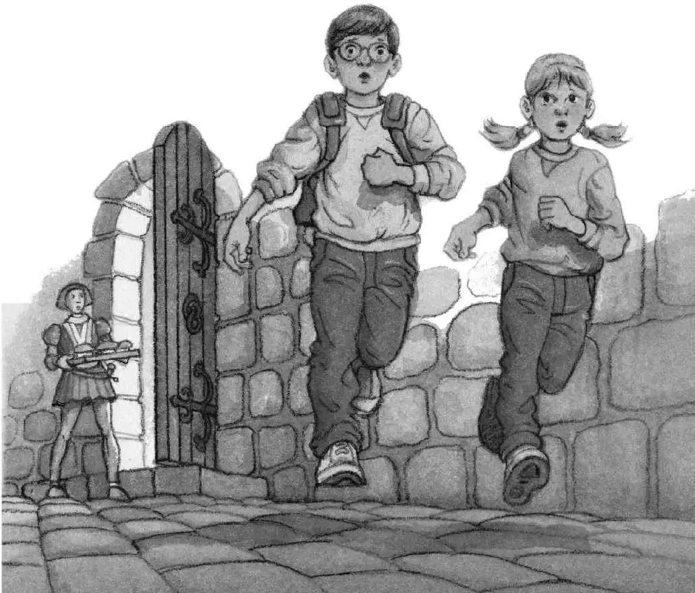

“Oh, brother,” muttered Jack.
He threw his stuff into his pack and moved toward the drawbridge. He hoped no one would see him.
It was getting darker.
When Jack got to the bridge, he started across. The wooden planks creaked under his feet. He peered over the edge of the bridge. Are there any crocodiles in the moat? he wondered. He couldn’t tell.
“Halt!” someone shouted. A guard on top of the castle wall was looking down.
Jack dashed across the bridge. He ran through the castle gate and into the courtyard. He heard the sounds of music, shouting, and laughter.
Jack hurried to a dark corner and crouched down. He shivered as he looked for Annie.
Torches lit the high wall around the courtyard. The courtyard was nearly empty.
Two boys led horses that clopped over the gray cobblestones. One of them was the knight’s black horse.
“Psssst! Jack!”
Jack peered into the darkness.
There was Annie.
She was hiding behind a well in the center of the courtyard. She waved at him.
Jack waved back. He waited until the boys and horses disappeared inside the stable. Then he dashed to the well.
“I’m going to find the music!” whispered Annie. “Are you coming?”
“Okay,” Jack said with a sigh.
They tiptoed together across the cobblestones. Then they slipped through the entrance of the castle.
Laughter and music came from a bright room in front of them. They stood at the doorway and peeked in.

“The feast in the Great Hall!” whispered Jack. He held his breath as he stared in awe.
A giant fireplace blazed at one end of the noisy room. Antlers and rugs hung on the stone walls. Flowers covered the floor.
People in bright clothes and funny hats strolled among the crowd. Some played oddly shaped guitars. Some juggled balls in the air. Some balanced swords on their hands.
Boys in short dresses carried huge trays of food. Dogs were fighting over bones under the tables. Men and women dressed in capes and furs sat at long, crowded wooden tables.
“I wonder which one is the knight,” said Jack.
“I don’t know,” whispered Annie. “But look—they’re all eating with their fingers!”
“Halt!” someone shouted behind them.
Jack whirled around.
A man carrying a tray of pies was standing a few feet away.
“Who art thou?” he asked angrily.
“Jack,” squeaked Jack.
“Annie,” squeaked Annie.
Then they ran as fast as they could down a dimly lit hallway.
